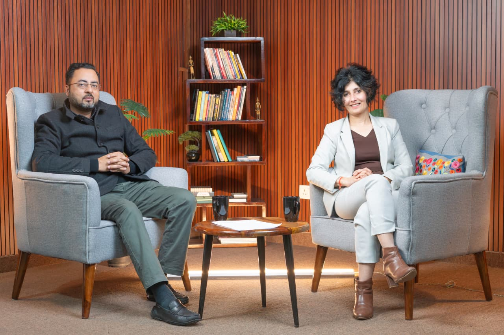

Watch, listen and read interviews, podcasts and features where Seema unpacks the future of L&D, the rise of AI-native learning, and the playbook for building Learning functions that earn their seat at the table.
Seema sits down with Startup Caffe to talk about turning L&D into a profit centre, the KiraZ™ framework, and why the next decade of learning will be AI-native.
Available for keynotes, podcasts, panel discussions, and corporate masterclasses. Each topic comes with a CXO-level perspective, real-world stories from Fortune 500s and start-ups, and frameworks the audience can take home and apply.
Beyond the hype — exactly where AI delivers ROI in L&D, what to automate, what to humanise, and the org capabilities you must build before you start. Includes live walk-throughs of AI-native learning ecosystems.
Keynote · Masterclass · PodcastMost companies stop at Levels 1–2. Seema shows how to push to Levels 3 & 4 — and finally tie learning spend to revenue, retention and performance metrics CFOs actually care about.
CFO & CHRO AudiencesA controversial, data-backed take. The classroom era is over. Why blended, on-demand, AI-augmented pathways win — and the narrow set of moments where F2F still earns its keep.
Provocative KeynoteThe board case for diverse representation — from a Certified Independent Director (IICA, Govt. of India). What women directors uniquely bring to fiduciary debate, strategy, and risk oversight in modern boardrooms.
Board & Governance ForumsThe KiraZ™ playbook in action. How to reposition L&D as a revenue lever — from gap analysis to AI-native delivery to ROI measurement — in 90 days or less. Built on 25+ years across Aviva, GE Capital, and start-up turnarounds.

CEO Insights Magazine
Recognised among India's most influential Learning leaders for sustained impact across Fortune 500s and high-growth start-ups.
IICA · Govt. of India
Listed on the Independent Director's Databank by the Indian Institute of Corporate Affairs, Ministry of Corporate Affairs.
Podcast · 2026
Long-form conversation on building L&D from scratch, scaling AI-native learning, and the KiraZ™ framework.
Seema regularly speaks on L&D strategy, AI in learning, fractional executive leadership, and women in business. Drop us a note for podcast bookings, panels, or media features.
Get in Touch